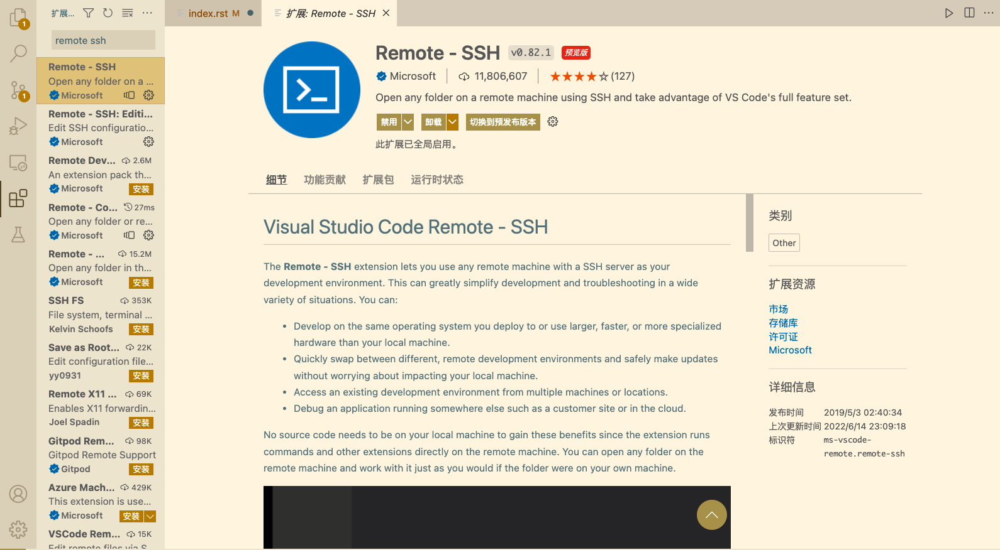
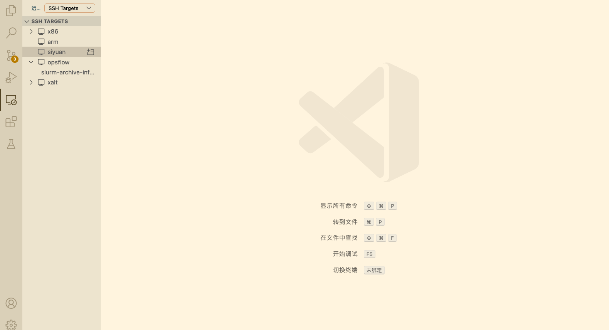
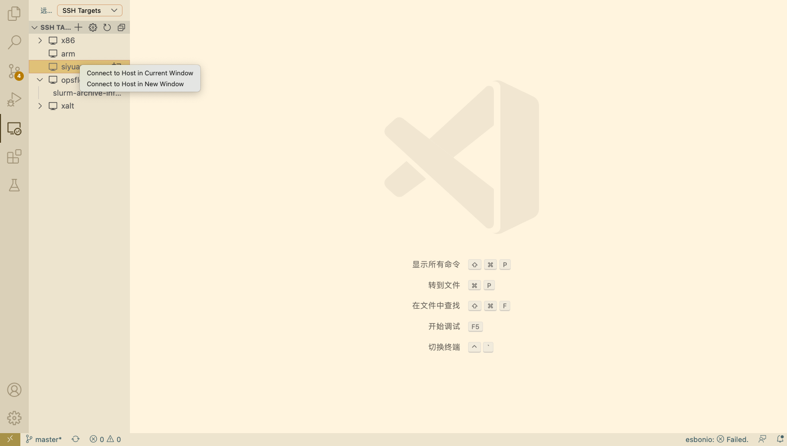
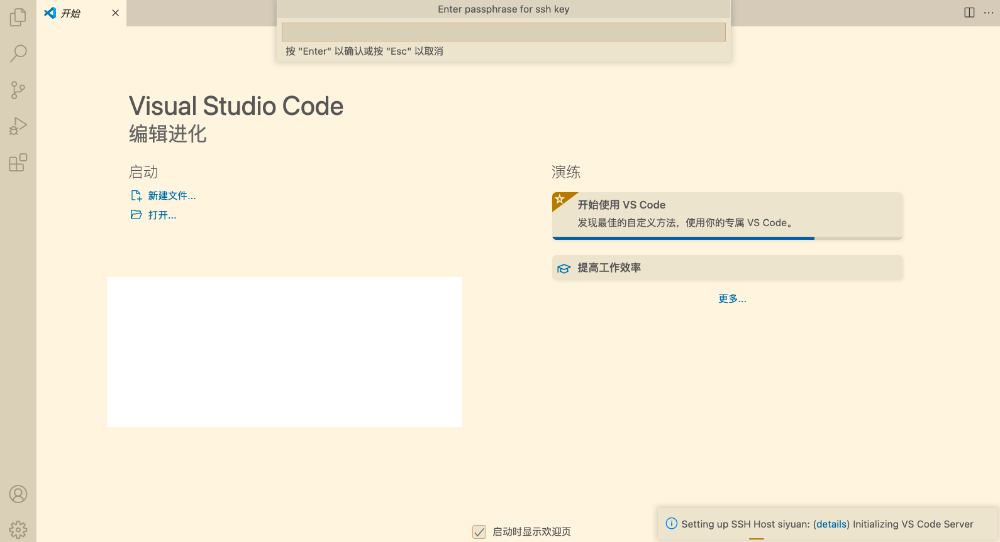
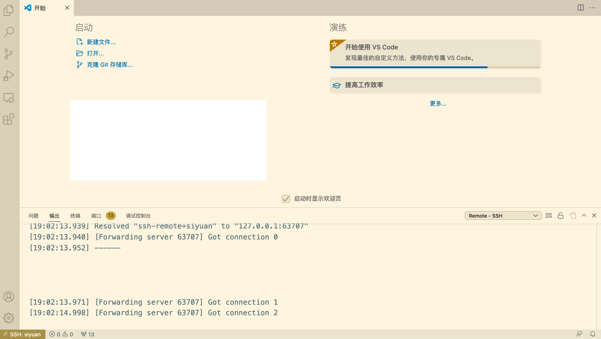
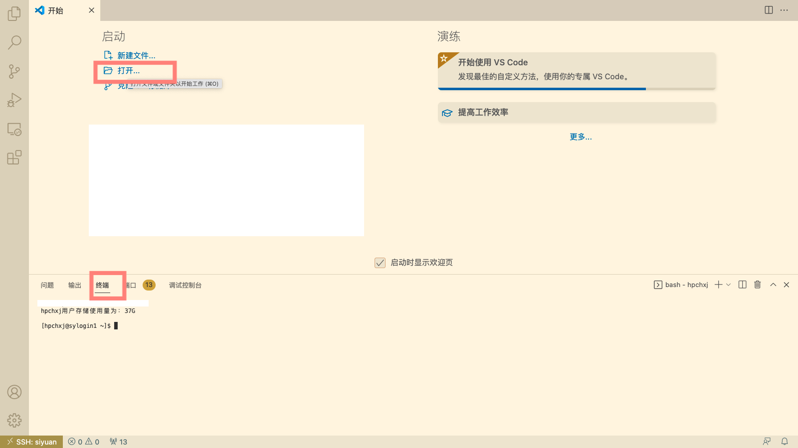

VS Code连接集群¶
Visual Studio Code（简称VS Code）是一款由微软开发且跨平台的免费源代码编辑器。 该软件支持语法高亮、代码自动补全（又称IntelliSense）、代码重构功能，并且内置了命令行工具和Git 版本控制系统。
VS Code经过配置，可以远程连接到Pi集群及思源一号，在本地进行远程的开发部署工作。配置VS Code进行远程开发主要分为4个步骤：
在本地电脑安装兼容的SSH客户端;
配置SSH免密登录集群；
在本地电脑安装VS Code客户端并安装相应插件；
使用VS Code远程访问；
安装兼容的SSH客户端¶
首先需要在本地电脑上安装OpenSSH兼容的SSH客户端（Putty不支持）。
对于Mac，系统自带的SSH客户端就可满足需求，无需安装。
对于linux用户，需要安装 openssh-client。
运行
$ sudo apt-get install openssh-client
或者
$ sudo yum install openssh-client
对于 Windows 用户，请安装 Windows OpenSSH Client。Windows 用户可以使用 Windows 设置或者 PowerShell 来安装该客户端，具体请参考链接 安装 OpenSSH。
SSH免密登录集群¶
关于SSH免密登录的配置请参考 ssh免密登录。
一个可参考的 ~/.ssh/config 文件内容如下：
Host x86
HostName pilogin.hpc.sjtu.edu.cn
User $YOUR_USERNAME
Port 22
Host arm
HostName kplogin1.hpc.sjtu.edu.cn
User $YOUR_USERNAME
Port 22
Host siyuan
HostName sylogin.hpc.sjtu.edu.cn
User $YOUR_USERNAME
Port 22
配置完毕后请在本地终端测试是否能访问集群。
$ ssh siyuan
Enter passphrase for key '/Users/YOUR_HOME/.ssh/id_rsa':
Last failed login: Wed Jun 22 18:34:38 CST 2022 from xxx.xxx.xxx.xx on ssh:notty
There were 2 failed login attempts since the last successful login.
Last login: Wed Jun 22 18:28:52 2022 from xxx.xxx.xxx.xx
本地安装 VS Code 及插件¶
请至 VS code download 下载于本地操作系统对应的 VS Code安装包并根据步骤安装。
打开VS Code软件， 安装 Remote SSH插件。
使用VS Code 访问集群¶
安装完毕后点开左方工具栏中remote-ssh插件的图标，该插件会自动读取 ~/.ssh/config 中的主机名。
右键相应的主机名即可选择连接主机：
此时会弹出窗口要求输入先前设置的passphrase:
输入密码后即可链接至远程主机：
连接后可选择打开文件夹或者终端：
